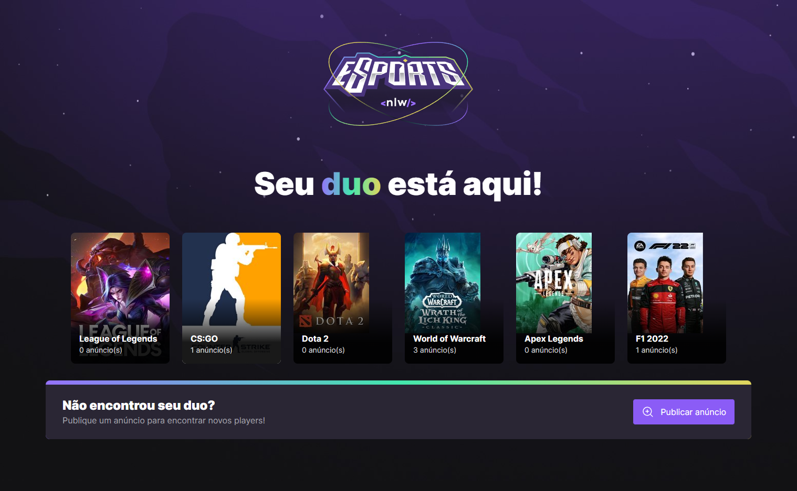
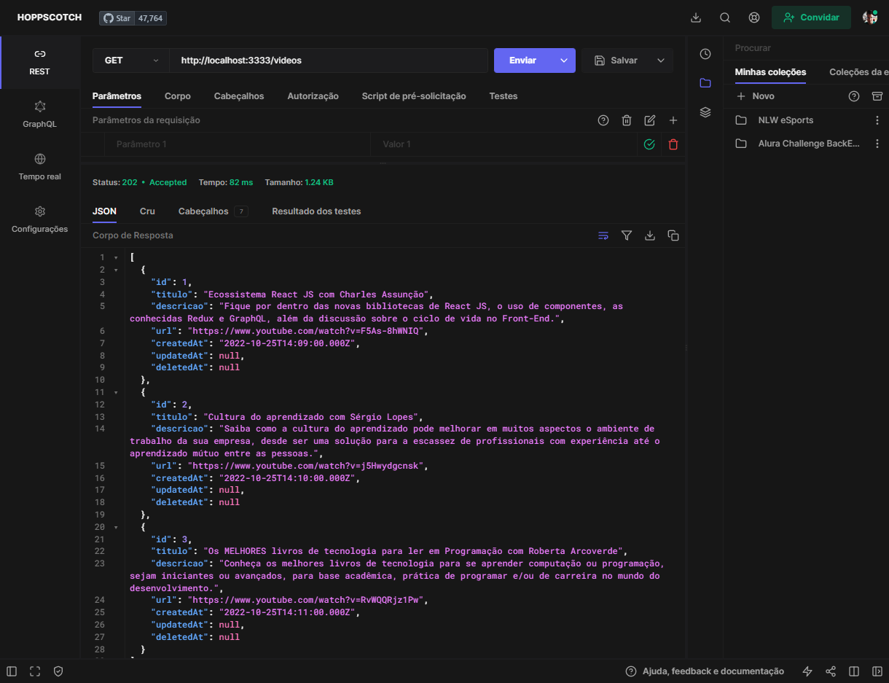

Digital Outlet $
Páginas Estáticas do Projeto Integrador do Grupo 3 da Digital House, realizado no segundo semestre de 2021, no curso WebFullStack.
Repositório original do projetoPáginas Estáticas do Projeto Integrador do Grupo 3 da Digital House, realizado no segundo semestre de 2021, no curso WebFullStack.
Repositório original do projetoEste é um pequeno teste de conceito cujo objetivo é criar uma réplica do jogo PONG com apenas HTML, CSS e JavaScript.
Repositório original do projeto
Desafios do #7DaysOfCode em Javascript da Alura, projeto em que a cada dia, durante sete dias, um desafio era lançado para resolução em JavaScript.
Repositório original do projeto
Desafios do #7DaysOfCode em HTML e CSS da Alura, projeto em que a cada dia, durante sete dias, um desafio era lançado para resolução em HTML e CSS, para o desenvolvimento do protótipo de uma página para a empresa fictícia Optimus Tech.
Repositório original do projetoEvento Next Level Week, da Rocketseat, no qual em uma semanas desenvolvemos uma landing page protótipo de uma para um web app destinado aos jogadores de eSports.
Repositório original do projetoEvento Next Level Week, da Rocketseat, no qual em uma semanas desenvolvemos um servidor, um aplicativo web com React e um aplicativo mobile com React-Native (de acordo com estes layouts do Figma) destinados aos jogadores de eSports procurando parceiros de jogo ('Duos').
Repositório original do projeto Desafio da Alura para a construção do front end da página da loja AluraGeek (de acordo com estes layouts do Figma) entre 26/09 e 25/10/2022.
Repositório original do projetoProjeto desenvolvido durante a Imersão React 5 cujo o objetivo era desenvolver uma cópia simplificada do YouTube (de acordo com estes layouts do Figma) entre 07/11 e 11/11/2022.
Repositório original do projetoDesafio da Alura para a construção de uma API para servir de Back End para o front do site AluraFlix, desenvolvido entre 24/10 e 22/11/2022.
Repositório original do projeto Estudo de canvas com o objetivo de transformar uma imagem em um sistema de partículas e possibilitar interação das mesmas com o mouse, a partir deste vídeo aqui.
Repositório original do projetoDesafios da Fase II da Trilha Web Front End do programa Santander Coders 2023 em parceria com a ADA.
Repositório original do projetoProjeto pessoal com o objetivo de aprender React para desenvolver um aplicativo de administração de cidades medievais como complemento a uma campanha de RPG de mesa que mestro atualmente.
Figma Repositório original do projeto